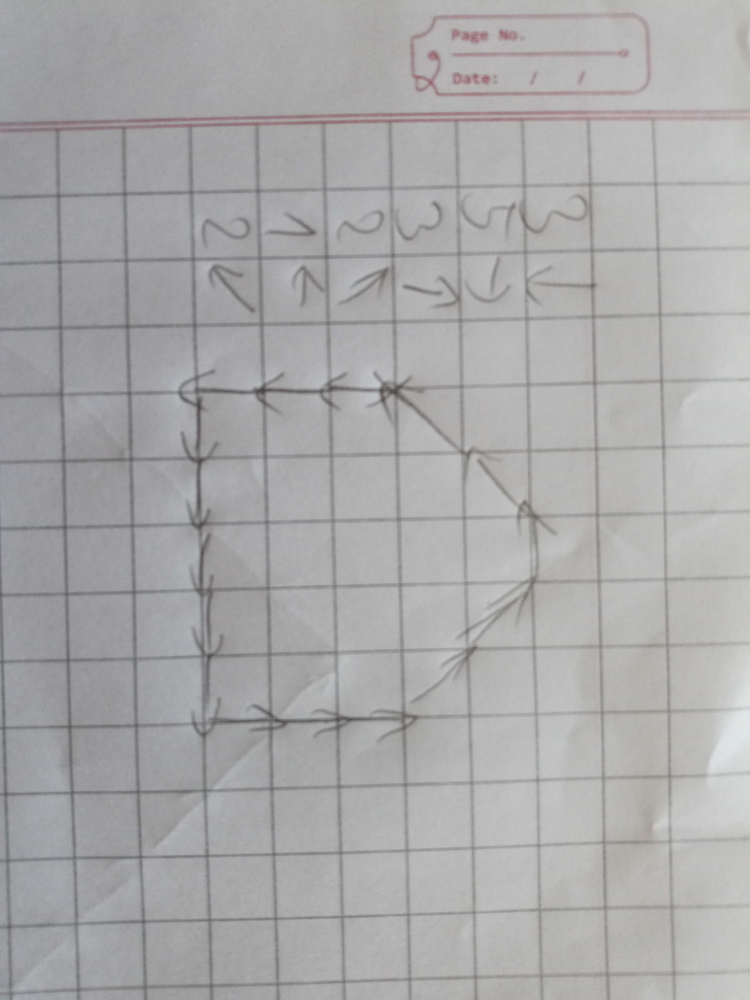
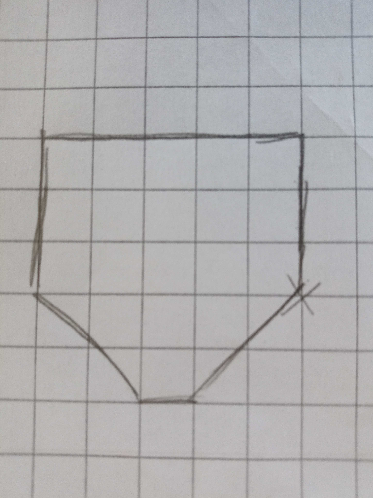

Algorytmy
Cele zajęc
- Poznanie czym jest algorytm
- Poznanie algorytmu wyszukiwania binarnego
Przykład
 
Narysuj obrazek korzystając z instrukcji
- 4 ⬅️
- 2 ↖️
- 2 ↙️
- 4 ⬅️
- 2 ↖️
- 6 ↗️
- 8 ↘️
- 1 ⬇️
- 19 ⬅️
- 4 ↗️
- 1 ↘️